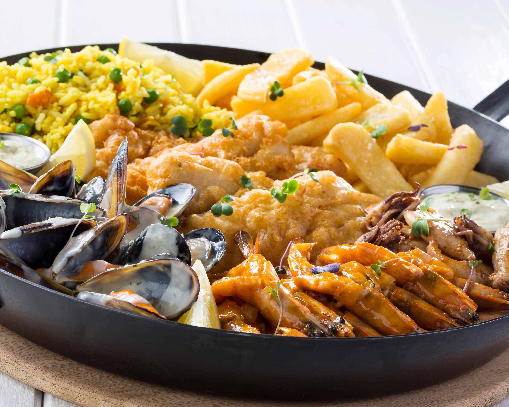

SEAFOOD
t's popular with chefs because it goes well with a wide variety of ingredients and flavourings and the bones from its head make an excellent stock. If you like sole and turbot then you'll like John Dory.
At the food court